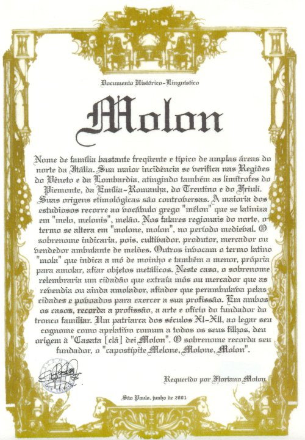

Outros Estudos
|  |
Molon se constitui num sobrenome bastante freqüente e típico de definidas áreas do norte da Itália. Sua incidência mais expressiva se verifica nas Regiões do Vêneto e da Lombardia, sendo que na primeira os índices de freqüência são bem mais elevados. ocorre também em regiões limítrofes, embora com índices mais modestos, sobretudo naquelas do Piemonte , da Emília-Romanha, do trentino-Alto Ádige e do Friuli-Venécia Júlia. A presença deste sobrenome na Região do Lácio é atribuída aos fluxos migratórios que deslocaram muitas famílias de suas áreas de origem em direção à capital italiana. Se assim não for, surge um problema de cunho lingüístico na interpretação do sobrenome nas áreas centrais da península, como se verá mais adiante. Nas demais Regiões, a presença deste sobrenome é ocasional e esparsa. Ante esta colocação genérica e de apresentação sobre sua distribuição areal ou geográfica na Itália, pode-se afirmar que Molon é um sobrenome tipicamente setentrional e, mais especificamente, vêneto e lombardo. |
{kind=link}
Um levantamento efetuado nas listas telefônicas de 1996/1997 de todas as Regiões e Províncias italianas apresentou um resultado condizente com quanto foi afirmado no parágrafo anterior. De fato, o sobrenome se distribui em áreas bastante definidas do território italiano. Na verdade, o sobrenome se concentra sobretudo na Região do Vêneto, onde apresenta seus mais elevados índices de freqüência nas Províncias de Vicenza, Padova, estendendo-se de modo acentuado também no território das Províncias de Verona, Rovigo. Veneza e, em menor escala, naquela de Treviso. Desta área se estende em direção sul, atingindo a região da Emília-Romanha, em direção norte, penetrando nos territórios das Regiões do Friuli-Venécia Júlia e do Trentino-Alto Ádige. Entre a Região do Vêneto e da Lombardia, verifica-se um vazio que parece indicar que nestas duas regiões o sobrenome Molon representa outro núcleo independente do anterior. De qualquer forma, em território lombardo o sobrenome se concentra sobretudo nas Províncias de Milano, Pavia, Varese, estendendo-se em direção às piemontesas de Novara e Torino. A presença do sobrenome em outras áreas ou Regiões limítrofes deve ser interpretada como expansão do mesmo, ocorrida em épocas passadas ou mais recentes.
O fato peculiar ou estranho é a presença do sobrenome Molon na região central do Lácio. Se o mesmo surgiu nessa área, provavelmente suas origens etimológicas podem se diferenciar naquelas do norte e, em decorrência, apresentar outro significado final. a maioria dos estudiosos do assunto, porém, acreditam que se trate somente de um fato migratório que levou famílias do norte para o centro da península. A argumentação apresentada é dupla. Em primeiro lugar, a capital sempre atrai, por variadas razões, migrantes de todo o país. Em segundo lugar, na época do fascismo foram saneados os grandes paludes e pantanais ao sul de Roma, tornando-os produtivos. Foi criada a Província de Latina que foi povoada por migrantes de todo o país, especialmente das áreas do norte, destacando-se entre eles os vênetos, trentinos, lombardos e friulanos. A solução para o caso seria retroceder nos séculos e verificar desde que época os Molon residem na área, pesquisa que demandaria muito tempo.
A razoável difusão deste sobrenome pode ser indício de que houve vários troncos familiares Molon, surgidos no período medieval, ao mesmo tempo e em diferentes pontos geográficos. Este fato é claro indicativo que os portadores deste sobrenome não são todos parentes entre si. Existe somente um grau de parentesco, obviamente, dentro do mesmo clã Molon, entre os descendentes do mesmo ancestral medieval, fundador de um específico núcleo familiar e que era cognominado Molon.
Estas colocações servem para sublinhar a dificuldade de estabelecer com precisão a área de surgimento do tronco familiar ou de cada um deles. A falta de documentação medieval a respeito das famílias e de seu próprio surgimento dificulta a definição de quantos eram de origem esses núcleos familiares.
Há quem acredite que não passem de dois, isto é, um vêneto e outro lombardo. Há outros que falam em quatro ou mais, afirmando que seriam de um vêneto e igualmente, bem mais que um lombardo. A maioria dos estudiosos acredita que a reduzida presença em outras áreas indica que os Molon residentes nessas áreas sejam descendentes de um dos troncos anteriores. Outros ainda chegam a admitir o surgimento de vários troncos, mas de difícil definição quanto à área ou cidade precisa de origem, defendendo, porém, que o principal ou os principais dentre eles eram originários somente dos territórios vêneto e lombardo. Outros ainda preferem admitir o surgimento de somente um que, através dos séculos, se propagou nas mencionadas áreas da Itália, uma vez que o sobrenome aparece muito concentrado em torno de Vicenza e de Padova. A discussão certamente seria interminável, uma vez que as lacunas documentais do período medieval só servem para fazer suposições e levantar hipóteses que, muito provavelmente , não serão comprovadas nunca e não levarão nunca a um consenso a respeito.
A dificuldade em estabelecer com precisão o surgimento, ao mesmo tempo e em locais diferentes, de mais de um tronco familiar Molon reside na falta de documentação histórica a respeito. De fato, no período medieval pouco ou quase nada se escrevia sobre as famílias e seus designativos ou sobrenomes. Estes aparecem, repentinamente, em documentos isolados e dispersos e passam a se repetir sempre com maior freqüência. De um modo geral, nem um levantamento genealógico rigoroso dirime esta questão, porquanto os registros sucessivos e ininterruptos das famílias e de seus membros remontam a uma prescrição pelo Concílio de Trento ( 1545-1563). Antes dessa data, inexistia qualquer tipo de documento oficial, fosse referente a nascimento, a matrimônio ou a óbito. Existiam somente crônicas e atos oficiais envolvendo a Igreja, os Feudos, os Principados, os Ducados. Condados, Marquesatos, Repúblicas e algumas poucas famílias influentes.
Estes documentos tratavam dos principais temas medievais, como distribuição de terras a colonos, doações de bens imóveis à Igreja, testamentos de nobres, compra e venda de bens, julgamentos, absolvições e condenações e atos jurídicos de variado tipo. Nestes textos, comparecem os sobrenomes dos personagens centrais, das testemunhas e dos componentes dos júris populares. Vez por outra, aparece alguma listagem dos habitantes de um povoado, de um castelo, de uma comunidade.
Nestes documentos são ‘pescados’ os sobrenomes sob forma latina, latinizada ou italiana arcaica. Estes documentos esparsos constituem a fonte principal do estudo dos sobrenomes. Às vezes, encontra-se pai e filho citados em mesmo documento. Na maioria das vezes, porém, os sobrenomes comparecem uma só vez num século; se aparecem reiteradas vezes, é raro que se repita o mesmo prenome, exceção feita quando se trata de algum nobre, de rico mercador, de célebre cavaleiro ou capitão de exércitos medievais, de cidadão das Cortes medievais, de pródigo protetor dos mesmos afortunados ou de grande benfeitor de Ordens religiosas monásticas e da própria Igreja.
Aparecem com destaque aventureiros, guerreiros, os bravos cavaleiros, os fiéis escudeiros dos nobres, os mercadores e outros cidadãos de destaque, citados no parágrafo antecedente; o povo mesmos aquinhoado comparece em listas de paróquias, como beneficiários de lotes de terras a serem cultivadas para o nobre ou rico proprietário, em litígios comunitários na exploração de terras públicas para apascentar rebanhos, para extração de lenha e madeiras, para a extração de pedras e argila para construção e outras riquezas naturais, e ainda em casos de traições, de condenações, de fugas, revoltas e outras questões que levassem a subverter a ordem pública vigente na época, etc.
Deve-se ter presente ainda que os sobrenomes, desde seu surgimento até o século XVI, quando há um grande movimento pela italianização dos nomes familiares, passam de uma forma a outra com a maior facilidade. As transcrições são feitas em latim, depois no italiano arcaico, retornam ao latim, seguem pelos caminhos dos falares regionais, num suceder-se de formas difirentes ou diferenciadas, tornando-se difícil estabelecer a forma mais usual. Isto, quando não se abandona o próprio sobrenome para assumir outro, pelas mais variadas razões. As indefinições gráficas, porém continuam até os inícios do século XIX e, em algumas áreas, até a segunda metade do mesmo século.
Estas colocações servem para sublinhar a dificuldade da pesquisa de documentos precisos sobre o surgimento, a evolução e a fixação definitiva dos sobrenomes. Retornando ao sobrenome Molon, pode-se observar na listagem anexa ao final, onde comparecem todos os assinantes das listas telefônicas italianas, portadores deste sobrenome, e sua dispersão em áreas mais ou menos distantes entre si, no território italiano. Com um pouco de paciência, aproximando-a da lista dos prefixos telefônicos e dos mapas e gráficos, pode-se facilmente definir as regiões, Províncias e cidades em que se faz presente. Aliás, num desses mapas se pode ler que o sobrenome ocorre hoje em 205 dos 8.102 municípios italianos.
Como os ancestrais dos Molon do Brasil eram originários do território vicentino, transcreve-se, a título de informação complementar, a nominata entre os 121 municípios da Província de Vicenza em que ocorre o sobrenome: Altavilla Vicentina, Arcugnano, Arzignano, Arsigliano Veneto, Barbarano Vicentino, Bassano del Grappa, Bolzano Vicentino, Brendola, Brogliano, Campiglia dei Creazzo, Crespadoro, Gallio, Grumolo delle Abbadesse, Longare, Lonigo, Montebello Vicentino, Montecchio Maggiore, Monticello Conte Otto, Montorso Vicentino, Mossano, Recoaro terme, Romano d’Ezzelino, San Germano dei Berici, San Vito di Leguzzano, Sarego, Schio, Sossano, Sovizzo, Torri di Quartesolo, Valdagno, Velo d’Astico e Vicenza.